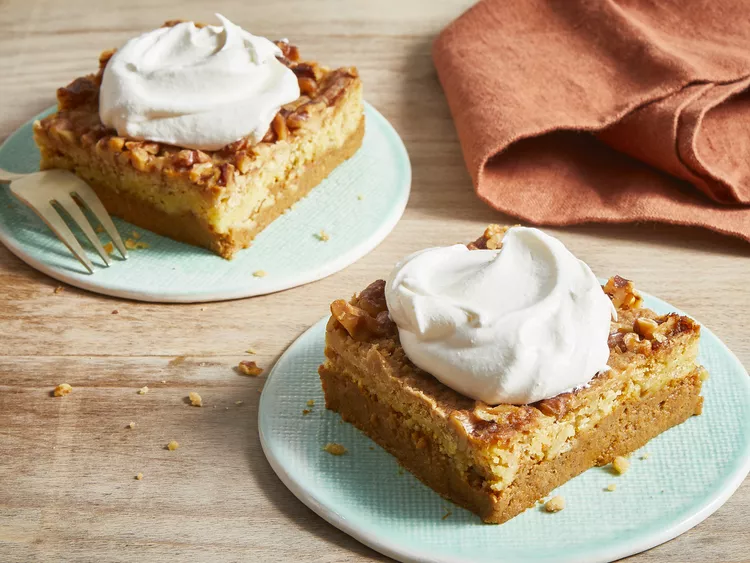

Pumpkin Desert

Description
Great Pumpkin Dessert is a warm,
comforting fall dessert that combines a smooth pumpkin custard filling with aromatic pumpkin pie spices,
topped with buttery yellow cake mix and crunchy chopped walnuts. Baked until golden and crisp,
it offers the perfect balance of creamy, sweet, and spiced flavors.
Serve it warm with a dollop of whipped cream or a scoop of vanilla ice cream for the ultimate seasonal treat
Ingredients
- 1 (15 oz) can pumpkin puree
- 1 (12 fl oz) can evaporated milk
- 3 eggs
- 1 cup granulated sugar
- 4 tablespoon pumpkin pie spice
- 1 (18.25 oz) package yellow cake mix
- ¾ cup butter, melted
- 11/2 cups chopped walnuts
- Whipped cream or vanilla ice cream (optional, for serving)
Steps
- Preheat the oven to 3500F (1750C)and lightly grease a 9x13-inch baking dish
- In a large bowl, whisk together the pumpkin puree, evaporated milk, eggs, sugar, and pumpkin pie spice until smooth.
- Pour the pumpkin mixture evenly into the prepared baking dish.
- sprinkle the dry yellow cake mix evenly over the pumpkin layer.
- Drizzle the melted butter over the cake mix, then sprinkle the chopped walnuts on top.
- Bake for about 1 hour, or until the center is set and a knife inserted near the middle comes out clean.
- Let the dessert cool for a few minutes before serving. Enjoy warm with whipped cream or vanilla ice cream, if desired
Home